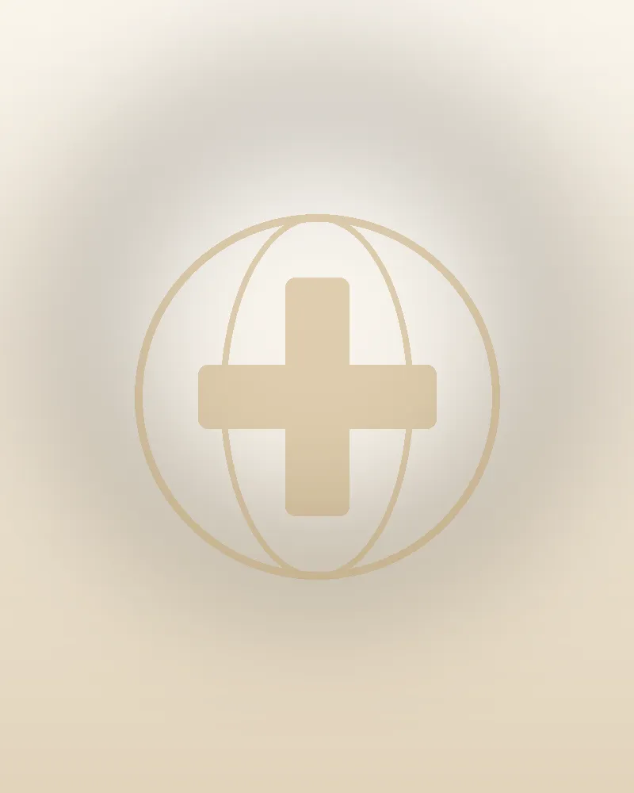

Услуги
Чем я могу вам помочь
Я сотрудничаю со многими клиниками и больницами Стамбула. Врача подбираю для каждого пациента отдельно, а всё время пребывания перевожу и нахожусь рядом.
-
Стоматология
Самая частая причина приезда моих пациентов. От отдельных коронок до полного преображения улыбки.
5–10 дней пребывания обычно при винирах и коронках -
Пластическая хирургия
Операции на лице и теле у опытных хирургов. Я рядом и во время восстановления.
7–10 дней пребывания обычно при большинстве операций -
Пересадка волос
Стамбул – одно из самых популярных мест в мире для пересадки волос. Помогаю выбрать врача, которому можно доверять.
2–3 дня пребывания в Стамбуле обычно достаточно -
Бариатрическая хирургия
Бариатрические операции при ожирении, после медицинского отбора. После возвращения мы остаёмся на связи.
5–7 дней пребывания в Стамбуле обычно -
Офтальмология
Лазерная коррекция зрения и другие офтальмологические процедуры. Подбираю центр под ваш случай.
3–4 дня пребывания в Стамбуле обычно -
Спросить о другой процедуре
Не видите здесь своей процедуры? Я помогаю и с другим лечением. Напишите, и я проверю, что могу для вас сделать.
Консультация бесплатная и ни к чему не обязывает
2–3×
Примерно во столько раз лечение в Турции часто дешевле, чем в большинстве стран Европы.
Точную стоимость вы узнаете после бесплатной консультации, ещё до приезда.
До и после
Результаты лечения моих пациентов. Передвиньте ползунок, чтобы сравнить.
 ДоПосле
ДоПосле
 ДоПосле
ДоПосле
 ДоПосле
ДоПосле
 ДоПосле
ДоПосле
 ДоПосле
ДоПосле
 ДоПосле
ДоПосле
 ДоПосле
ДоПосле

ДоПосле ДоПосле
ДоПосле
 ДоПосле
ДоПосле
Фото публикуем с согласия пациентов. Результат зависит от индивидуального случая.
Как я подбираю врача
Я не называю клиники на сайте, потому что врача выбираю для конкретного человека. После консультации скажу точно, где и у кого вы будете лечиться.
Опыт именно в вашей процедуре
Ищу врача, который ежедневно выполняет именно ту процедуру, которая вам нужна.
Отзывы пациентов
Учитываю опыт моих пациентов и то, как клиника заботится о них после процедуры.
Условия в клинике
Я знаю клиники и больницы, с которыми сотрудничаю. Знаю, как они выглядят изнутри.
Ваш бюджет
Ищу решение, которое подходит под ваши возможности. Цену вы знаете до приезда.